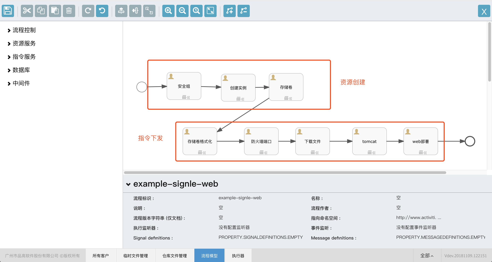
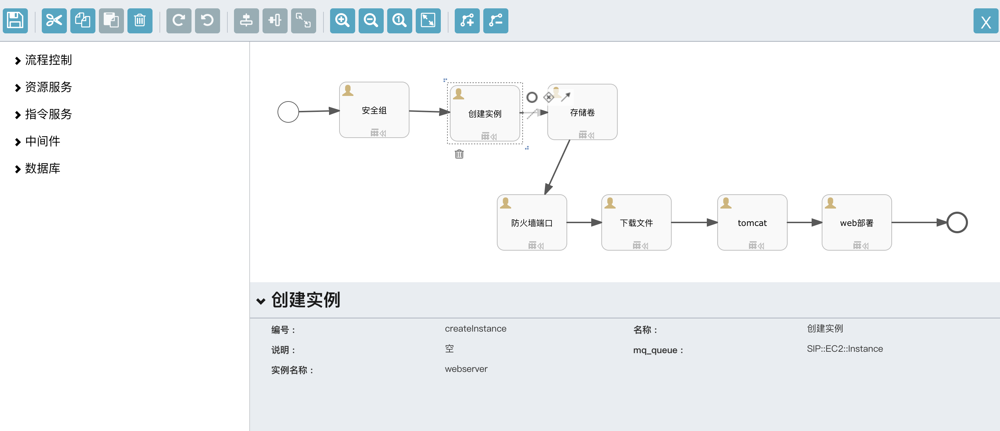
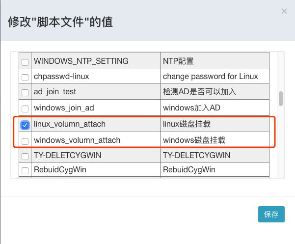
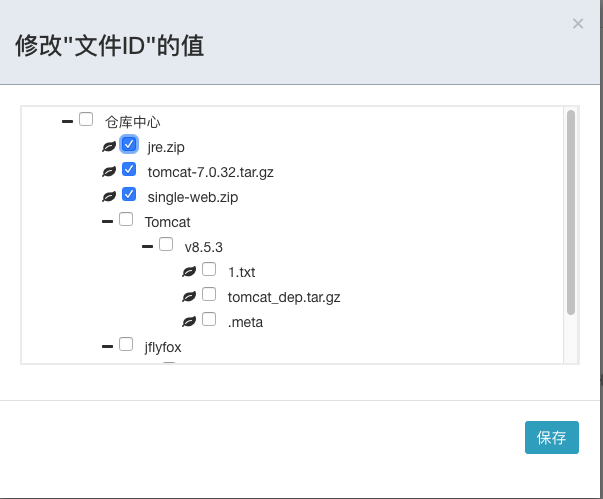
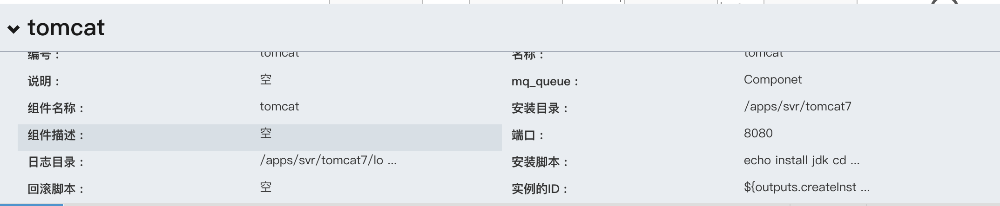

制作单机架构的web应用
数据库和web程序部署在同一台机器
创建应用，版本，创建方案等请参考第2节使用指引，本章将介绍如何具体设计一个单机架构的web流程模型
安装包准备和上传
tomcat安装包下载地址：http://sip.bingosoft.net:8081/upload/app/tomcat-7.0.32.tar.gz
jre安装包下载地址：http://sip.bingosoft.net:8081/upload/app/jre.zip
程序包下载地址：http://sip.bingosoft.net:8081/upload/app/single-web.zip
- 在配置管理->高级服务->文件管理->临时文件管理中上传已经下载的安装包
- 在临时文件中，分别选中这三个安装包，右键或更多操作，选中注册。
- 在仓库文件中，查看已经上传的三个安装包
如果您的环境可以连接下载地址，也可以直接使用wget 下载这个链接到虚拟机中
设计方案
打开方案，进入设计器界面，按照下图所示，依次从流程控制中拖拽开始事件，结束事件；从资源服务中拖拽安全组，实例和存储卷，从指令服务中拖拽防火墙端口，文件，组件和自定义指令。

编辑安全组
开放端口：
tcp:8080编辑实例
实例名称为webserver,节点的编号为
createInstance,名称为创建实例
编辑存储卷
实例ID为
${outputs.createInstance.instanceId}编辑存储卷格式化 实例ID为
${outputs.createInstance.instanceId}编辑防火墙端口
实例ID为
${outputs.createInstance.instanceId},防火墙端口为tcp:8080编辑文件
实例ID为
${outputs.createInstance.instanceId}，文件ID选择已上传并注册的三个文件
编辑组件
实例ID为
${outputs.createInstance.instanceId},维护组件的名称，日志目录，安装路径等
安装脚本：
#! /bin/sh echo install jdk cd /tmp unzip -q jre.zip -d /usr/local/java/ echo "JAVA_HOME=/usr/local/java" >> /etc/profile echo "JRE_HOME=/usr/local/java/jre" >> /etc/profile echo "PATH=\$PATH:\$JRE_HOME/bin" >> /etc/profile echo "export PATH" >> /etc/profile source /etc/profile echo install tomcat mkdir -p /apps/svr/tomcat7 tar zxf tomcat-7.0.32.tar.gz -C /apps/svr/tomcat7/ ln -s /apps/svr/tomcat7/bin/catalina.sh /etc/init.d/tomcat sed -i "102a JRE_HOME=/usr/local/java/jre" /apps/svr/tomcat7/bin/catalina.sh echo "service tomcat start">>/etc/rc.local
编辑自定义指令
实例ID为
${outputs.createInstance.instanceId}指令内容:
#! /bin/sh unzip signle-web.zip -d /apps/svr/tomcat7/webapps service tomcat start
设计完成，点击保存即可。